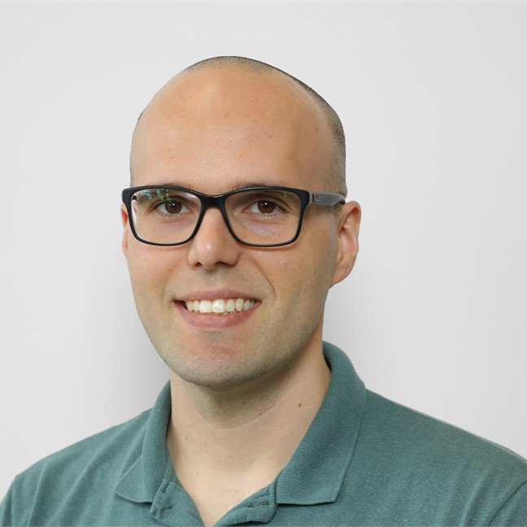

Lucas Silveira Kupssinskü
Associate Professor · Deep Learning Researcher Professor Adjunto · Pesquisador em Aprendizado Profundo
School of Technology · Pontifical Catholic University of Rio Grande do Sul (PUCRS) · Porto Alegre, Brazil Escola Politécnica · Pontifícia Universidade Católica do Rio Grande do Sul (PUCRS) · Porto Alegre, Brasil
I develop methods to correct, adapt, and verify language models without retraining, and I train researchers who build those methods with rigor. Desenvolvo métodos para corrigir, adaptar e verificar modelos de linguagem sem retreinamento, e formo pesquisadores que constroem esses métodos com rigor.
At the Graduate Program in Computer Science at PUCRS I co-lead the Machine Learning Theory and Applications Research Group (MALTA). I hold a Ph.D. in Applied Computing from Unisinos. My research focuses on machine learning and deep learning, with applications in fairness, health, generative models, LLMs, and Machine Unlearning, supported by institutions such as Petrobras, Motorola, Michael J. Fox Foundation, and Kunumi. No Programa de Pós-Graduação em Ciência da Computação da PUCRS coordeno, em conjunto, o Grupo de Pesquisa em Teoria e Aplicações de Aprendizado de Máquina (MALTA). Tenho doutorado em Computação Aplicada pela Unisinos. Minha pesquisa concentra-se em aprendizado de máquina e aprendizado profundo, com aplicações em fairness, saúde, modelos geradores, LLMs e Machine Unlearning, com apoio de instituições como Petrobras, Motorola, Michael J. Fox Foundation e Kunumi.
Before academia, I spent ten years in industry as a developer and systems analyst, and I have taught at every level, from teenagers in a technical course to digital inclusion programs for elderly people. I moved to research and teaching full-time because it is where I believe I can create the most positive impact on society. Antes da academia, passei dez anos na indústria como desenvolvedor e analista de sistemas, e já ensinei em todos os níveis, de adolescentes em um curso técnico a programas de inclusão digital para idosos. Migrei para a pesquisa e o ensino em dedicação integral porque é onde acredito poder gerar o maior impacto positivo na sociedade.
News Notícias
Research Interests Interesses de Pesquisa
Projects Projetos
Partnerships Parcerias
I work with companies, foundations, and funding agencies on both applied and pure machine learning research. A partnership can take the form of a contracted R&D project, a jointly supervised research line, consulting, or training for industry teams. Recent and current collaborations include Petrobras, Motorola, the Michael J. Fox Foundation, Kunumi, FAPERGS, and CNPq, on topics ranging from geoscience and health to efficient LLMs. Trabalho com empresas, fundações e agências de fomento em pesquisa de aprendizado de máquina, tanto aplicada quanto pura. Uma parceria pode tomar a forma de um projeto de P&D contratado, uma linha de pesquisa orientada em conjunto, consultorias ou treinamentos para equipes da indústria. Colaborações recentes e atuais incluem Petrobras, Motorola, Michael J. Fox Foundation, Kunumi, FAPERGS e CNPq, em temas que vão de geociências e saúde a LLMs eficientes.
Interested in a collaboration? Write a short note about your problem and we will get back to you. Interessado em uma colaboração? Escreva uma breve mensagem sobre o seu problema e retornaremos o contato.
Get in touch → Entre em contato →Publications Publicações
Also available on Google Scholar. Também disponível no Google Scholar.
Current Advisees Orientandos Atuais
Want to join the group? I take full-time students at all levels: undergraduate, M.Sc., and Ph.D. Quer entrar no grupo? Oriento estudantes em dedicação integral em todos os níveis: graduação, mestrado e doutorado.
Read this first → Leia isto primeiro →Alumni Egressos
Lectures & Courses Disciplinas e Cursos
Deep Neural NetworksRedes Neurais Profundas
Course materials →Material da disciplina →Deep Learning IAprendizado Profundo I
Course materials →Material da disciplina →Deep Learning IIAprendizado Profundo II
Course materials →Material da disciplina →Machine LearningAprendizado de Máquina
Theory of ComputingTeoria da Computação
Scientific Methodology and Artificial Intelligence LabMetodologia Científica e Laboratório de Inteligência Artificial